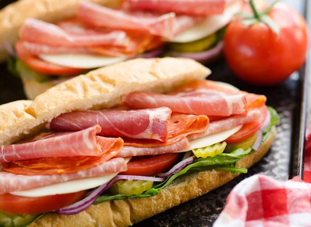

Italian Hero Sub
Home

Description
If you are a fan of picking up Italian hero sandwiches at your local deli then we have good news for you—you
can make them easily right at home. This recipe, which takes just ten minutes to prepare, is made using
thinly sliced Italian meats, such as salami and capocollo, provolone, and a medley of vegetables, such as
banana peppers, tomato, and fresh spinach. Plus, if you love sandwiches here are some
interesting side effects of eating a sandwich every day.
Ingredients
- 3 deli hoagie buns
- 6 oz. variety pack of thin sliced Italian meats, Salami, Capocollo, Calabrese
- 6 slices Provolone cheese
- Choice of vegetables, spinach, lettuce, tomato, onion, pickles, banana peppers, olives, etc.
- Mayonnaise
- Dijon mustard
Steps
- Slice the hoagie buns lengthwise and top with vegetables, Provolone and meats.
- If serving immediately, dress each sandwich with Mayonnaise and Dijon and cut in half.
- If serving later, wrap each sub in cling wrap and store refrigerated up to 48 hours.